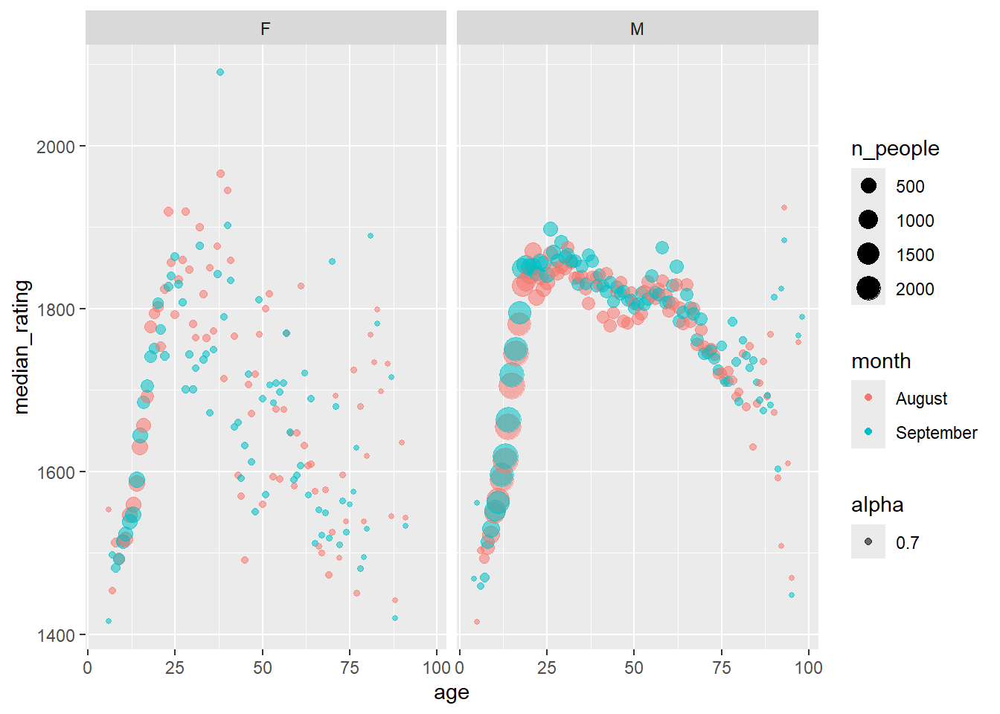

Code
library(tidyverse)
library(knitr)
# library(sf)
# library(spData) couldn't find proper key Fed Abbv -> long-namelibrary(tidyverse)
library(knitr)
# library(sf)
# library(spData) couldn't find proper key Fed Abbv -> long-nameThis week we’re exploring August and September chess player rating data from FIDE (the International Chess Federation). Monthly data files are published on the FIDE website.
A chess rating (Elo) is an estimate of a player’s strength relative to other players. If a player performs better or worse than expected, their rating increases or decreases accordingly.
The September 2025 rating list was shaped primarily by results from the Sinquefield Cup, Quantbox Chennai Grand Masters, 61st International Akiba Rubinstein Chess Festival, and the Spanish League Honor Division 2025 – a Swiss team tournament held in Linares.
Questions
Thank you to Jessica Moore for curating this week’s dataset.
Cleaning script provided by readme on Git.
Script makes use of the withr package, which I’ve never seen or used. According to the documentation, withr helps run code with safely and temporily modified global state so that code is less error-prone.
Also, the data comes as a txt where each column has fixed width. As such, the script uses readr::read_fwf.
The script fixes up some names with regex, filters to active players (past year) using the flag column, then drops the flag column.
tuesdata <- tidytuesdayR::tt_load('2025-09-23')
fide_ratings_august <- tuesdata$fide_ratings_august
fide_ratings_september <- tuesdata$fide_ratings_septembertb_ratings_raw <- bind_rows(list(August = fide_ratings_august, September = fide_ratings_september), .id = "month") |>
arrange(id, month)
n_active <- dplyr::n_distinct(tb_ratings_raw$id)
tb_removed <- anti_join(fide_ratings_august, fide_ratings_september, "id")
tb_added <- anti_join(fide_ratings_september, fide_ratings_august, "id")5033 members were removed, while 7206 members were added in September.
wrangle_ratings <- function(tb_ratings) {
tb_ratings |>
filter(games > 0) |>
mutate(
across(where(is.double), as.integer),
across(!name & where(is.character), as.factor),
age = year(today()) - bday
) |>
mutate(
age_range = case_when(
between(age, 0, 9) ~ "0 - 9",
between(age, 10, 14) ~ "10 - 14",
between(age, 15, 19) ~ "15 - 19",
between(age, 20, 24) ~ "20 - 24",
between(age, 25, 29) ~ "25 - 29",
between(age, 30, 39) ~ "30 - 39",
between(age, 40, 49) ~ "40 - 49",
between(age, 50, 69) ~ "50 - 59",
age >= 60 ~ "over 60",
)
) |>
mutate(
age_range = factor(
age_range,
c(
"0 - 9",
"10 - 14",
"15 - 19",
"20 - 24",
"25 - 29",
"30 - 39",
"40 - 49",
"50 - 59",
"over 60"
)
)
) |>
relocate(age_range)
}Setting up age ranges (0-10, then every 5 years until 60+) and removing records of people who didn’t play a game.
tb_ratings <- wrangle_ratings(tb_ratings_raw)tb_ratings_summary <- tb_ratings_raw |>
group_by(month) |>
summarise(
n_active = dplyr::n_distinct(id),
n_logged = sum(games > 0),
percent_log = round(n_logged / n_active * 100, 1),
.groups = "keep"
)
kable(tb_ratings_summary)| month | n_active | n_logged | percent_log |
|---|---|---|---|
| August | 200983 | 45118 | 22.4 |
| September | 203156 | 44750 | 22.0 |
Only around 22% of the active players actually logged a game.
tb_age_quant <- tb_ratings |>
distinct(id, .keep_all = T) |>
group_by(sex) |>
reframe(
prob = c(0, 0.1, 0.5, 0.9, 1),
quant = quantile(age, prob)
)
kable(tb_age_quant)| sex | prob | quant |
|---|---|---|
| F | 0.0 | 6 |
| F | 0.1 | 10 |
| F | 0.5 | 15 |
| F | 0.9 | 35 |
| F | 1.0 | 91 |
| M | 0.0 | 4 |
| M | 0.1 | 11 |
| M | 0.5 | 21 |
| M | 0.9 | 63 |
| M | 1.0 | 98 |
Youngest player is 4. Oldest is 98. Females have a much younger median.
# plt_age_hist_aug <-
tb_ratings |>
distinct(id, .keep_all = T) |>
ggplot(aes(age, sex, fill = sex)) +
geom_violin()@age-plt The female population is much younger than the male population. Generally, women were not permitted to join chess clubs until the ealy 1900’s. Vera Menchik was the first woman to compete in top-level tournaments in the late 1920’s. Judit Pulgar and Hou Yifan are generally acknowledged as the best female chess players of all-time. Judit Polgar’s peak rating put her No. 8 in the world. See [Wikipedia(https://en.wikipedia.org/wiki/Women_in_chess)] for more info. Here’s one of Polgar’s most brilliant games: link to Youtube.
tb_sex_ratio <- tb_ratings |>
filter(month == "September") |>
distinct(id, .keep_all = T) |>
group_by(sex, fed) |>
count(age_range, name = "n_people") |>
pivot_wider(names_from = sex, values_from = n_people) |>
drop_na(age_range) |>
mutate(sex_ratio = M / F)
tb_sex_ratio |>
drop_na(sex_ratio) |>
ggplot(aes(fct_rev(age_range), sex_ratio, fill = age_range)) +
geom_violin() +
geom_point(aes(size = F + M), alpha = 0.6) +
labs(x = "age", y = "sex ratio (M:F)") +
scale_y_log10()
tb_sex_ratio_NA <- tb_sex_ratio |>
filter(is.na(sex_ratio))
n_distinct(tb_sex_ratio_NA$fed)[1] 153tb_sex_ratio_NA |>
ggplot(aes(age_range)) +
geom_histogram(stat = "count")Warning in geom_histogram(stat = "count"): Ignoring unknown parameters:
`binwidth` and `bins`n_sex_ratio_NA <- sum(is.na(tb_sex_ratio$sex_ratio))There are 166 Feds and 9 age ranges (total = 1083 groups). Of those 1083 fed-age-group pairings, 433 and 22 have no female or male players, respectively. Most of these are smaller countries and/or older age groups.
tb_sex_ratio |> group_by(age_range) |> slice_max(sex_ratio) |> mutate(sex_ratio = round(sex_ratio, 2)) |> kable()| fed | age_range | F | M | sex_ratio |
|---|---|---|---|---|
| KOR | 5 - 9 | 1 | 27 | 27.00 |
| SCO | 10 - 14 | 1 | 21 | 21.00 |
| HKG | 15 - 19 | 3 | 39 | 13.00 |
| SWE | 20 - 24 | 1 | 49 | 49.00 |
| CAN | 25 - 29 | 1 | 59 | 59.00 |
| MEX | 30 - 39 | 3 | 107 | 35.67 |
| SWE | 40 - 49 | 1 | 77 | 77.00 |
| IND | 50 - 59 | 2 | 312 | 156.00 |
| CZE | over 60 | 2 | 174 | 87.00 |
tb_sex_ratio |> group_by(age_range) |> slice_min(sex_ratio) |> mutate(sex_ratio = round(sex_ratio, 2)) |> kable()| fed | age_range | F | M | sex_ratio |
|---|---|---|---|---|
| POR | 5 - 9 | 5 | 3 | 0.60 |
| NGR | 10 - 14 | 8 | 4 | 0.50 |
| CPV | 15 - 19 | 4 | 3 | 0.75 |
| TJK | 15 - 19 | 4 | 3 | 0.75 |
| INA | 20 - 24 | 3 | 1 | 0.33 |
| EST | 25 - 29 | 2 | 1 | 0.50 |
| ISL | 30 - 39 | 2 | 1 | 0.50 |
| VIE | 40 - 49 | 2 | 1 | 0.50 |
| BER | 50 - 59 | 1 | 1 | 1.00 |
| GUA | 50 - 59 | 1 | 1 | 1.00 |
| EST | over 60 | 1 | 1 | 1.00 |
| MNC | over 60 | 1 | 1 | 1.00 |
Wanted to look at sex ratios by Fed, but there are 177 Feds. Might be cool to make a map of total chess players and sex ratio by Fed over time. After looking for a while, can’t find a dataset that maps Fed codes to their long name, making a join to a world map dataset more manual than I want to do.
tb_age_rating <- tb_ratings |>
group_by(age, sex, month) |>
summarize(
n_people = n(),
median_rating = median(rating)
) |>
relocate(sex, 1) |>
arrange(sex, age)`summarise()` has grouped output by 'age', 'sex'. You can override using the
`.groups` argument.tb_age_rating |>
ggplot(aes(age, median_rating, size = n_people, color = month, alpha = 0.7)) +
geom_point() +
facet_wrap(vars(sex))
Median Elo seems to peak around 25, but some of the data is too sparse in places. Need to use age groups. Also, looks like ratings inflate.
tb_ratings_both <- tb_ratings |>
anti_join(bind_rows(tb_added, tb_removed), join_by(id)) |>
mutate(id = factor(id))
tb_ratings_both_wide <- tb_ratings_both |>
pivot_wider(names_from = month, values_from = c(rating, games)) |>
drop_na(contains("game"))
tb_ratings_change <- tb_ratings_both_wide |>
mutate(rating_change = rating_September - rating_August)tb_ratings_change |>
ggplot(aes(rating_change)) +
geom_histogram(binwidth = 20)
t_test_change <- t.test(tb_ratings_change$rating_change)The average player improved their Elo from August to September by 3.8 with 95% CI [3.1, 4.4].
tb_ratings_change |>
mutate(abs_change = abs(rating_change)) |>
arrange(desc(abs_change)) |>
select(name, sex, age, fed, title, rating_September, rating_change) |>
group_by(title) |>
slice_head(n = 5) |>
kable()| name | sex | age | fed | title | rating_September | rating_change |
|---|---|---|---|---|---|---|
| Moses, Neil | M | 14 | CAN | CM | 2056 | -178 |
| Przybylski, Bartosz | M | 18 | POL | CM | 2207 | 166 |
| Vaidyanathan, Kannan | M | 12 | USA | CM | 2248 | 165 |
| Dogan, Umut Anil | M | 14 | TUR | CM | 2239 | 163 |
| De Jong, Lode | M | 15 | NED | CM | 1978 | -162 |
| Bekker, Maxim | M | 35 | RUS | FM | 2079 | -150 |
| Yildiz, Egehan | M | 16 | TUR | FM | 2271 | 130 |
| Nemeth, Zalan | M | 23 | IRL | FM | 2206 | -120 |
| Gusev, Mikhail | M | 16 | SRB | FM | 2140 | -105 |
| Zhauynbay, Alimzhan | M | 11 | KAZ | FM | 1968 | -103 |
| Nguyen, Duc Hoa | M | 36 | VIE | GM | 2442 | 46 |
| Ilincic, Zlatko | M | 57 | SRB | GM | 2201 | -45 |
| Malisauskas, Vidmantas | M | 62 | LTU | GM | 2258 | -42 |
| Golubka, Petro | M | 36 | UKR | GM | 2369 | 40 |
| Munkhgal, Gombosuren | M | 37 | MGL | GM | 2363 | -38 |
| Balaji, Aaravamudhan | M | 20 | ENG | IM | 2297 | -97 |
| Simpson, Michael | M | 18 | RSA | IM | 2135 | -94 |
| Vasquez Toledo, Cristian | M | 29 | CHI | IM | 2283 | -77 |
| Lu, Ming | M | 19 | USA | IM | 2273 | 71 |
| Large, Peter G | M | 69 | ENG | IM | 2233 | -58 |
| Mansurova, Mumtozbegim | F | 16 | UZB | WCM | 1996 | 155 |
| Agarwal, Amaya | F | 10 | ENG | WCM | 1818 | -145 |
| Chavarria Troya, Keytleen Denis | F | 14 | PAN | WCM | 1684 | -134 |
| Calugareanu, Ioana-Denisa | F | 16 | ROU | WCM | 1895 | -129 |
| Montiel Marin, Micaela Agustina | F | 17 | ARG | WCM | 1738 | -125 |
| Ziobrowska, Maja | F | 17 | POL | WFM | 1883 | -189 |
| Li Chen, Helena Joana | F | 16 | ESP | WFM | 2159 | 149 |
| Tarasenka, Aliaksandra | F | 19 | BLR | WFM | 2266 | 137 |
| Tokarz, Izabela | F | 18 | POL | WFM | 1962 | -128 |
| Fei, Irene Jiao | F | 12 | USA | WFM | 1981 | 122 |
| Li, Xueyi | F | 32 | CHN | WGM | 2191 | -77 |
| Doluhanova, Evgeniya | F | 41 | UKR | WGM | 2208 | -64 |
| Navrotescu, Andreea | F | 29 | FRA | WGM | 2277 | -58 |
| Nandhidhaa, P V | F | 29 | IND | WGM | 2302 | -42 |
| Mammadova, Narmin | F | 26 | AZE | WGM | 2183 | -37 |
| Mrudul Dehankar | F | 21 | IND | WIM | 2244 | 134 |
| Mou, Iris | F | 16 | USA | WIM | 2152 | -89 |
| Franco Valencia, Angela | F | 38 | COL | WIM | 2194 | 73 |
| Gomez Barrera, Javiera Belen | F | 23 | CHI | WIM | 2173 | -64 |
| Chandreyee, Hajra | F | 26 | IND | WIM | 2138 | 62 |
| Shroff, Dhairya Amit | M | 9 | CAN | NA | 1832 | 349 |
| Kim, Yubin | M | 17 | KOR | NA | 1984 | 273 |
| Hasanov, Ramin | M | 22 | AZE | NA | 1506 | -268 |
| Kiryanova, Snezhana | F | 17 | RUS | NA | 1562 | -265 |
| Burkitbayev, Aibar | M | 12 | KAZ | NA | 1875 | 258 |
tb_fed_title_summary <- tb_ratings |>
filter(month == "September") |>
group_by(fed) |>
summarize(n_titles = sum(!is.na(title))) |>
arrange(desc(n_titles))
tb_fed_title_summary |>
slice_max(n_titles, n = 10) |>
ggplot(aes(fct_reorder(fed, n_titles, .desc = T), n_titles)) +
geom_col() +
labs(x = "Fed", y = "n titles")
tb_title_summary <- tb_ratings |>
group_by(sex, month) |>
count(title, name = "n_people") |>
add_count(sex, wt = n_people, name = "total") |>
mutate(percent_title = round(n_people / total * 100, 2))
tb_ratings |>
filter(!is.na(title)) |>
ggplot(aes(title, fill = month)) +
geom_histogram(stat = "count", position = "identity") +
facet_wrap(vars(sex))